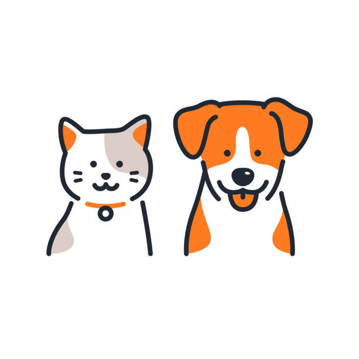

Dale una segunda oportunidad a un amigo peludo

En nuestro refugio nos dedicamos a rescatar animales en situación de calle. Brindamos atención veterinaria, mucho amor y buscamos familias responsables que quieran sumar un nuevo integrante a su hogar.
¿Cómo podés ayudarnos?
Existen muchas formas de colaborar con nuestra causa, incluso si no podés adoptar en este momento:
- Adoptar un perro o gato.
- Postularte como hogar de tránsito.
- Donar alimento o insumos veterinarios.
- Compartir nuestras publicaciones en redes sociales.